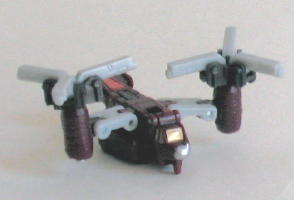
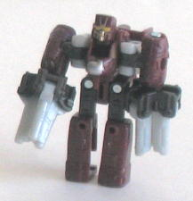

Gunbarrel
Gunbarrel
Allegiance : Minicon
Size : Mini-Con
Difficulty of Transformation : Very Easy
Color Scheme: Black, milky light brown, and some white, silver, and bright orange
Rating : 6.2
Autobot
Whirl w/ Gunbarrel & Makeshift
Price
: $20 (U.S.)
Gunbarrel
Allegiance
: Minicon
Size
: Mini-Con
Difficulty of Transformation
: Very
Easy
Color Scheme:
Black, milky light
brown, and some white, silver, and bright orange
Rating
: 6.2
(NOTE: Because this is a repaint, this is not a full-blown review. This mainly covers any changes made to the mold and the color scheme, and merely compares it to Armada Gunbarrel. For a review on the mold itself, read the review of Armada Gunbarrel here .)
Looks like ol' Gunbarrel
accidentally crashed into a Starbucks. Yessir, now he's mocha cappuccino-flavored!
Seriously, though, his Universe color scheme really does remind you of
coffee. The brown is EXACTLY the right color, and the bits of white kinda
look like cream or something. And the black... well, I guess maybe concentrations
of coffee grounds? Anyway, it's a very nice color scheme, and goes together
very well in both modes. It's also rather realistic, as I could easily
see an aircraft like this with a primarily brown color scheme. Truth be
told, though, I don't think it QUITE measured up to Armada Gunbarrel's,
as the older one tended to be slightly more "rusty" like you'd expect a
large older aircraft to be, but the old version's just barely got an edge.
Both color schemes look very nice.
No mold changes have
been made to Universe Gunbarrel. (He and the other Minicon in this 3-pack,
Makeshift, still can transform into their weapon modes- they're just not
pictured here, both for simplicity's sake and to conserve precious web
space.)
Makeshift


Allegiance
: Minicon
Size
: Mini-Con
Difficulty of Transformation
: Easy
Color Scheme
: Dark maroon, greyish
white, and some silver, metallic gold, charcoal black, and dull orange
Rating
: 7.7
(NOTE: Because this is a repaint, this is not a full-blown review. This mainly covers any changes made to the mold and the color scheme, and merely compares it to Armada Makeshift. For a review on the mold itself, read the review of Armada Makeshift here .)
Universe Makeshift is
another Minicon that gets a pretty good paint job. He has maroon as a main
color, which gives him a bit of a dull, rusty feel, and the rather dull
grey-white and orange only adds to this effect, like he's been through
his share of choppy flights. He does have some nice shiny metallic colors
for contrast though- there's some silver and gold paint apps here and there.
They're especially decorative on his robot face, with some lines around
the edges of the head and such. It looks really nice. It seems that a few
paint apps that were on his previous versions- such as the triangular paint
app that was only visible in his weapon mode- have been removed, though.
I guess for cost purposes? I dunno. He still has a nice overall paint job,
although, just like Universe Gunbarrel, he tends to come in ever-so-slightly
below his original Armada version, primarily because I thought the old
color scheme fit a helicopter just slightly better.
No mold changes have
been made to Universe Makeshift.
 Autobot
Whirl
Autobot
Whirl
Allegiance
: Autobot
Size
: Between Deluxe and Mega
Difficulty of Transformation
: Easy
Color Scheme
: Dark navy blue, light
sparkly blue, dirty white, light brownish gray, and some transparent dull
yellow, maroon, silver, black, dull red, and dark maroon
Rating
: 8.4
Like all Universe toys,
Whirl is a repaint of an older toy, but I haven't reviewed the previous
version of this mold- Machine Wars Sandstorm- so I'll be reviewing Whirl
in full here.
Not surprisingly, Universe Whirl is a throwback
to G1 Whirl. Not only does this toy have the same alt mode as G1 Whirl
(a helicopter), but the color scheme is somewhat similar (blue). (Although
it should be noted that G1 Whirl was primarily light blue, while Universe
Whirl definitely has a darker shade of blue on him.) Universe Whirl's overall
color scheme is quite schnazzy. The dark blue and camo sparkly light blue
patterns really play very nicely off each other, and give Whirl more of
a military feel. The brownish gray can be kinda dull, although it does
fit in with the other colors. The red "Energon radiation" and black "burnt"
patterns on the missile launchers help to break up some of that monotony,
though, as do the yellow side thrusters and helicopter blade. Speaking
of the helicopter blade, it rotates reasonably well- better than
Armada
Cyclonus'
, but not as good as, say,
RiD Ro-Tor's
.
The blades themselves are actually at slightly different heights (one half
piece is on top of the other half), but it's so slight that you don't normally
notice it. Besides that, Whirl's other gimmick is that his two missile
launchers flip down from below his blades to the sides of the helicopter's
main body, which is more of a "attack ready" position. Whirl's robot legs
are rather obviously on the bottom side of this mode, but they blend in
very well with the overall structure of the mode, and don't hang down much
farther than the bottom on an actual helicopter, so that's a very minor
thing. His cockpit is transparent, although I'm not sure if it's for the
best in this situation- Whirl's robot head is seen clearly inside the cockpit,
and there isn't any other details in there like a miniature control console
or seats or anything. So I would've preferred if they just painted the
windows on in this case. Whirl has surprisingly good mold detailing for
a toy of his age, although in some places- like the top of the back half
of this mode- are almost devoid of detailing altogether, which is rather
odd.
Whirl's robot mode is
also quite good, although it does have a few minor flaws in it. For one,
the helicopter's tail halves look rather odd, jutting out from behind Whirl's
shoulders as they do. They don't get in the way much, luckily, but it is
still a little distracting. The landing skids also hang off the sides of
Whirl's legs, but they fold back easier and don't get in the way at all,
not to mention they're a lot smaller than Whirl's shoulder extras. The
helicopter blades- now bent in half behind Whirl's back- also can't lock
in place, so they tend to swivel around a bit, which can be a tad annoying.
Whirl's proportions, however, are top-notch, as is the overall look of
his robot mode. His head has some pretty good mold and paint detailing,
and make Whirl look like a bonafied Autobot. This mold's age is starting
to show a little, however- although the articulation was reasonably good
when the mold was first made, now it's a bit below part. He can move side-to-side
at the shoulders, but not back-and-forth, so that limits how he can aim
his guns. He also can move back-and-forth at the elbows, hips, and knees.
But it should be noted that his legs are connected together at the knees,
so although he can move his legs individually at that point, but of his
legs have to move as one at the hips. So he doesn't have the greatest range
of articulation.
Universe Whirl is a very nice repaint of a mold that was pretty good for its time, if a bit unoriginal. Nice gimmicks, nice color schemes, and excellent proportions. Back in the mid-90s, this toy may have earned a "must-buy" rating of 9.0+, but in 2004, it is showing its age a little in such things as articulation and on some of the mold detailing. His partners Gunbarrel and Makeshift are both excellent repaints, if not slightly inferior to the originals, and the overall value of this team, if released individually, totals slightly less than $20, I'd bet. But it's still a great set, and if you don't have any of the previous versions of Whirl and aren't a stickler for articulation, than I'd mildly recommend this set.
No Stats
Review by Beastbot